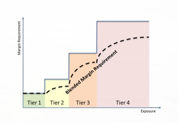

Forex
182 paires de devises au comptant et 140 forwards.
Consultez nos exigences de marge et d'autres informations relatives au trading sur marge avec Saxo
La marge initiale et la marge de maintenance visent à vous protéger des conditions de marché défavorables en créant une marge de sécurité entre votre capacité de négociation et le niveau de liquidation pour cause de marge insuffisante.
Pour en savoir plus sur les marges initiales et les marges de maintenance, cliquez ici.
Le FX est un produit à effet de levier, ce qui signifie qu'il offre au trader la possibilité de contrôler de grandes quantités de capital en utilisant très peu d'argent. Plus l'effet de levier est élevé, plus le niveau de risque est élevé.
Les exigences de marge diffèrent d'une paire de devises à l'autre, et sont susceptibles d’être modifiées en fonction de la liquidité et de la volatilité sous-jacentes de la paire de devises. Pour cette raison, les paires de devises les plus liquides (appelées « majeures ») nécessitent, dans la plupart des cas, une exigence de marge inférieure.
Saxo Bank propose une méthodologie de marge échelonnée comme mécanisme de gestion des événements politiques et économiques susceptibles d'entraîner une volatilité et une évolution rapide du marché.
Pour de plus amples informations sur la méthodologie mentionnée ci-dessus, cliquez ici.
Vous trouverez la liste complète des exigences de marge par paire de devises sous Exigences de marge & Conditions de trading ainsi que sur les plateformes SaxoTrader, sous Conditions de trading.
Les exigences de marge peuvent être modifiées sans préavis. Saxo Banqk se réserve le droit d'augmenter les exigences de marge pour les positions de taille importante, y compris les portefeuilles de clients considérés comme étant à haut risque.
Si à tout moment alors qu'une position de change est ouverte, la marge requise pour maintenir cette position dépasse les fonds disponibles sur le compte, vous risquez un « stop-out ». Vous serez notifié lorsqu'un appel de marge survient et vous devrez réduire la taille des positions ouvertes et/ou déposer plus de fonds (couverture de marge) dans le compte. Si aucune mesure n'est prise, Saxo peut fermer tout ou une partie des positions ouvertes afin de réduire l'exposition à un niveau acceptable.
(Investisseur particulier résidant dans l’UE)
La marge initiale et la marge de maintenance visent à vous protéger des conditions de marché défavorables en créant une marge de sécurité entre votre capacité de négociation et le niveau de liquidation pour cause de marge insuffisante.
Pour en savoir plus sur les marges initiales et les marges de maintenance, cliquez ici.
Saxo propose une méthodologie de marge échelonnée comme mécanisme de gestion des événements politiques et économiques susceptibles d'entraîner une volatilité et une évolution rapide du marché. Avec la marge hiérarchisée, plus le niveau d’exposition est élevé, plus l’exigence de marge moyenne (« exigence de marge mixte ») augmente. De même, plus le niveau d’exposition est faible, plus l’exigence de marge diminue. Voici une illustration de ce concept :

Les différents niveaux d’exposition (ou paliers) correspondent à un nombre absolu en dollars américains (USD) sur toutes les paires de devises. À chaque paire de devises correspond une exigence de marge spécifique par palier. Vous trouverez la liste complète des exigences de marge par paire de devises ici ainsi que sur les plateformes SaxoTrader, sous Conditions de trading.
Les exigences de marge peuvent être modifiées sans préavis. Saxo se réserve le droit d'augmenter les exigences de marge pour les positions de taille importante, y compris les portefeuilles de clients considérés comme étant à haut risque.
La marge initiale et la marge de maintenance visent à vous protéger des conditions de marché défavorables en créant une marge de sécurité entre votre capacité de négociation et le niveau de liquidation pour cause de marge insuffisante.
Découvrez plus d’informations sur les marges initiales et les marges de maintenance ici.
L’exigence de marge pour les options sur devises est calculée par paire de devises (assurant ainsi l'alignement avec le concept de marges par paliers selon le taux de change spot et à terme) et par date de maturité. Pour chaque paire de devises, il existe une limite supérieure à l'exigence de marge qui est l'exposition potentielle la plus élevée entre celle des options sur devises et des positions Forex au comptant et à terme, multipliée par la marge au comptant en vigueur. Ce calcul prend également en compte le netting potentiel entre les options sur devises et les positions Forex spot et à terme.
Dans le cas de stratégies à risque limité, comme par exemple un short call spread, l'exigence de marge sur un portefeuille d'options Forex est calculée comme étant la perte maximale à venir.
Pour les stratégies à risque illimité, par exemple les ventes de naked options, l'exigence de marge est calculée comme le montant notionnel multiplié par l'exigence de marge au comptant en vigueur.
Les taux de marge par paliers s'appliquent au calcul de la marge pour options sur devises lorsque la marge d'un client est déterminée par la marge de la position Forex spot en vigueur, et non par la perte future maximale. Les niveaux de marge pour le Forex spot en vigueur sont échelonnés en fonction des montants notionnels en dollars américains ; plus le montant notionnel est élevé, plus le taux de marge est susceptible d'être élevé. L'exigence de marge par paliers est calculée par paire de devises. Dans le calcul de la marge pour les options sur devises, l'exigence de marge spot en vigueur pour chaque paire de devises est le taux de marge par paliers, ou mixte, déterminé sur la base de l'exposition potentielle la plus élevée entre celle des options sur devises et des positions Forex spot et à terme.
Vous vendez un spread d'options d'achat sur 10M USDCAD aux taux de 1,41 et 1,42.
Le taux spot actuel est de 1,40.
L'exigence de marge sera la perte future maximale de 71 429 USD (10M x (1,42 - 1,41) = 100 000 CAD / USD @ 1,40).
Vous vendez une option de vente de 10M USDCAD. Vous courez un risque à la baisse illimité. L'exigence de marge est donc calculée comme le montant notionnel multiplié par l'exigence de marge spot en vigueur.
Le taux de marge au comptant en vigueur est déterminé par l'exposition potentielle la plus élevée, soit 10M USD.
Ainsi, le taux au comptant en vigueur est le taux de marge mixte de 2,2 % ((1 % x 3M USD + 2 % x 2M USD + 2 % x 2M USD + 3 % x 5M USD) / 10M).
L'exigence de marge est donc de 220 000 USD (2,2 % x 10M USD).
Le calcul de marge des options sur devises ne s'applique pas aux options Touch, mais les positions ouvertes affecteront le montant « disponible pour le trading sur marge », tel qu'affiché sur la synthèse du compte.
Par conséquent, si des positions sur marge sont détenues sur le compte, l'utilisation de la marge augmentera lors de l'ouverture de positions d'options Touch.
Remarque. Avant d'ouvrir la position, une pré-vérification sera effectuée pour s'assurer que vous ne pouvez pas accidentellement ouvrir une position d'option Touch qui placera l'utilisation de la marge au-dessus de 100 %.
La marge initiale et la marge de maintenance visent à vous protéger des conditions de marché défavorables en créant une marge de sécurité entre votre capacité de négociation et le niveau de liquidation pour cause de marge insuffisante.
Découvrez plus d’informations sur les marges initiales et les marges de maintenance ici.
The margin requirement applicable to opening and maintaining a margin position consists of two elements:
The initial and maintenance margin of a single stock CFD is based on the stock rating. Saxo defines 6 different stock ratings. This rating is derived from the market capitalization, liquidity and volatility of the underlying asset.
A stock with rating 1 has an initial margin of 10%. This means that this stock can be traded at 10:1 leverage.
| Saxo Rating | Initial margin | Maintenance Margin |
|---|---|---|
| 1 | 10,00 % | 9,00 % |
| 2 | 15,00 % | 12.50 % |
| 3 | 20,00 % | 17,50 % |
| 4 | 30,00 % | 25,00 % |
| 5 | 50.00 % | 45,00 % |
| 6 | 110.00 % | 100,00 % |
The margin requirement applicable to opening and maintaining a margin position consists of two elements:
An Index CFD with an initial margin of 5% can be traded at 20:1 leverage.
| Indeks-tracker | Initial margin | Maintenance Margin | |
|---|---|---|---|
 | US 30 Wall Street | 2,50 % | 2,00 % |
| US 500 | 2,50 % | 2,00 % |
| US Tech 100 NAS | 2,50 % | 2,00 % |
 | Belgium 20 | 5,00 % | 4,50 % |
 | Denmark 25 | 5,00 % | 4,50 % |
 | EU Stocks 50 | 3,00 % | 2,50 % |
 | France 40 | 3,00 % | 2,50 % |
 | Germany 30 | 3,00 % | 2,50 % |
| Germany Mid-Cap 50 | 5,00 % | 4,50 % |
| Germany Tech 30 | 5,00 % | 4,50 % |
 | Italy 40 | 5,00 % | 4,50 % |
 | Netherlands 25 | 5,00 % | 4,50 % |
 | Norway 25 | 5,00 % | 4,50 % |
 | Portugal 20 | 10,00 % | 9,50 % |
 | South Africa 40 | 10,00 % | 9,50 % |
 | Spain 35 | 5,00 % | 4,50 % |
 | Sweden 30 | 5,00 % | 4,50 % |
 | Switzerland 20 | 5,00 % | 4,50 % |
 | UK 100 | 3,00 % | 2,50 % |
| UK Mid 250 | 5,00 % | 4,50 % |
 | Australia 200 | 3,00 % | 2,50 % |
 | Japan 225 | 3,00 % | 2,50 % |
 | Hong Kong | 5,00 % | 4,50 % |
| Indeks-tracker | Initial margin | Maintenance Margin | |
|---|---|---|---|
 | China 50 | 10,00 % | 9,00 % |
 | India 50 | 10,00 % | 9,00 % |
 | Singapore | 10,00 % | 9,00 % |
 | Taiwan | 10,00 % | 9,00 % |
| US2000 | 5,00 % | 4,50 % |
The margin requirement applicable to opening and maintaining a margin position consists of two elements:
| Instrument Name | Symbol | Initial margin | Maintenance Margin |
|---|---|---|---|
| VALUTAER | |||
| Euro / amerikanske dollar | EURUSDEC | 2,00 % | 1,50 % |
| Euro / japanske yen | EURJPYRY | 4,00 % | 3,50 % |
| Euro / schweizerfranc | EURCHFRF | 4,00 % | 3,50 % |
| Euro / britiske pund | EURGBPRP | 5,00 % | 4,50 % |
| Britiske pund / amerikanske dollar | GBPUSDBP | 5,00 % | 4,50 % |
| Australske dollar / amerikanske dollar | AUDUSDAD | 4,00 % | 3,50 % |
| USD-indeks | USDINDEX | 1,50 % | 1,00 % |
The margin requirement applicable to opening and maintaining a margin position consists of two elements:
A Commodity CFD with an initial margin of 20% can be traded at 5:1 leverage.
| Instrument Name | Symbol | Initial margin | Maintenance Margin |
|---|---|---|---|
METALS | |||
| Guld | GOLD | 4,00 % | 3,50 % |
| Sølv | SILVER | 5,00 % | 4,50 % |
| Platin | PLATINUM | 8,00 % | 7,50 % |
| Palladium | PALLADIUM | 8,00 % | 7,50 % |
| Amerikansk kobber | COPPERUS | 4,00 % | 3,50 % |
ENERGY | |||
| Amerikansk råolie | OILUS | 5,00 % | 4,50 % |
| Britisk råolie | OILUK | 5,00 % | 4,50 % |
| Fyringsolie | HEATINGOIL | 5,00 % | 4,50 % |
| Amerikansk benzin | GASOLINEUS | 5,00 % | 4,50 % |
| Gasolie | GASOILUK | 5,00 % | 4,50 % |
| Amerikansk naturgas | NATGAS | 10,00 % | 9,00 % |
| CO2-emissioner | EMISSIONS | 10,00 % | 9,00 % |
AGRICULTURE | |||
| Majs | CORN | 5,00 % | 4,50 % |
| Hvede | WHEAT | 5,00 % | 4,50 % |
| Soyabønner | SOYBEANS | 5,00 % | 4,50 % |
SOFTS | |||
| New York – sukker nr. 11 | SUGARNY | 8,00 % | 7,50 % |
| New York – kaffe | COFFEE | 8,00 % | 7,50 % |
| New York – kakao | COCOA | 8,00 % | 7,50 % |
MEATS | |||
| Levende slagtekvæg | LIVECATTLE | 5,00 % | 4,50 % |
The margin requirement applicable to opening and maintaining a margin position consists of two elements:
A Bond CFD with an initial margin of 20% can be traded at 5:1 leverage.
| Instrument Name | Initial margin | Maintenance Margin |
|---|---|---|
| Tyske statsobligationer, 5-årige, Bobl | 1,50 % | 1,00 % |
| Tyske statsobligationer, 5-årige, Schatz | 1,50 % | 1,00 % |
| Tyske statsobligationer, 10-årige, Bund | 1,50 % | 1,00 % |
| Franske statsobligationer, 10-årige, OAT | 1,50 % | 1,00 % |
| Italienske statsobligationer, 10-årige, BTP | 2,00 % | 1,50 % |
La marge initiale et la marge de maintenance visent à vous protéger des conditions de marché défavorables en créant une marge de sécurité entre votre capacité de négociation et le niveau de liquidation pour cause de marge insuffisante.
Découvrez plus d’informations sur les marges initiales et les marges de maintenance ici.
La marge initiale et la marge de maintenance visent à vous protéger des conditions de marché défavorables en créant une marge de sécurité entre votre capacité de négociation et le niveau de liquidation pour cause de marge insuffisante.
La marge initiale et la marge de maintenance d'un CFD sur action sont basées sur la notation de l’action. Saxo définit 6 notations différentes. Cette notation est établie en fonction de la capitalisation du marché, de la liquidité et de la volatilité de l'actif sous-jacent.
Une action avec une notation de 1 a une marge initiale de 20 %. Cela signifie que cette action peut être négociée avec un effet de levier de 5:1.
| Notation Saxo | Marge initiale | Marge de maintenance |
|---|---|---|
| 1 | 20 % | 10 % |
| 2 | 20 % | 15 % |
| 3 | 25 % | 20 % |
| 4 | 35 % | 30 % |
| 5 | 55 % | 50 % |
| 6 | 110 % | 100 % |
Trouvez votre action locale dans le lien ci-dessous et voyez quelle est sa notation de marge.
La marge initiale et la marge de maintenance visent à vous protéger des conditions de marché défavorables en créant une marge de sécurité entre votre capacité de négociation et le niveau de liquidation pour cause de marge insuffisante.
Un CFD sur indices avec une marge initiale de 5 % peut être négocié avec un effet de levier de 20:1.
| Tracker indiciel | Marge initiale | Marge de maintenance | |
|---|---|---|---|
| US 30 Wall Street | 5 % | 2,5 % |
| US 500 | 5 % | 2,5 % |
| US Tech 100 NAS | 5 % | 2,5 % |
| Belgium 20 | 10 % | 5 % |
| Denmark 25 | 10 % | 5 % |
| EU Stocks 50 | 8 % | 4 % |
| France 40 | 8 % | 4 % |
| Germany 30 | 8 % | 4 % |
| Germany Mid-Cap 50 | 10 % | 5 % |
| Germany Tech 30 | 10 % | 5 % |
| Italy 40 | 10 % | 5 % |
| Netherlands 25 | 10 % | 5 % |
| Norway 25 | 10 % | 5 % |
| Portugal 20 | 10 % | 5 % |
| South Africa 40 | 20 % | 10 % |
| Spain 35 | 10 % | 5 % |
| Sweden 30 | 10 % | 5 % |
| Switzerland 20 | 10 % | 5 % |
| UK 100 | 5 % | 2,5 % |
| UK Mid 250 | 10 % | 5 % |
| Australia 200 | 5 % | 2,5 % |
| Japan 225 | 5 % | 2,5 % |
| Hong Kong | 10 % | 5 % |
| Tracker indiciel | Marge initiale | Marge de maintenance | |
|---|---|---|---|
| China 50 | 10 % | 5 % |
| India 50 | 10 % | 5 % |
| Singapore | 10 % | 5 % |
| Taiwan | 10 % | 5 % |
| US2000 | 10 % | 5 % |
La marge initiale et la marge de maintenance visent à vous protéger des conditions de marché défavorables en créant une marge de sécurité entre votre capacité de négociation et le niveau de liquidation pour cause de marge insuffisante.
Un CFD sur le Forex avec une marge initiale de 3,3 % peut être négocié avec un effet de levier de 25:1.
L'effet de levier disponible pour les CFD sur le Forex est de 50:1 ou 25:1, ce qui équivaut à 2 % ou 4 % de marge.
| Nom de l'instrument | Symbole | Marge initiale | Marge de maintenance |
|---|---|---|---|
| DEVISES | |||
| Euro / dollar américain | EURUSDEC | 3,33 % | 1,66 % |
| Euro / yen japonais | EURJPYRY | 3,33 % | 1,66 % |
| Euro / Franc Suisse | EURCHFRF | 3,33 % | 1,66 % |
| Euro / livre sterling | EURGBPRP | 3,33 % | 1,66 % |
| Livre sterling / dollar américain | GBPUSDBP | 3,33 % | 1,66 % |
| Dollar australien / dollar américain | AUDUSDAD | 5,00 % | 2,50 % |
| Indice USD | INDICE USD | 20 % | 10 % |
La marge initiale et la marge de maintenance visent à vous protéger des conditions de marché défavorables en créant une marge de sécurité entre votre capacité de négociation et le niveau de liquidation pour cause de marge insuffisante.
Un CFD sur matière première avec une marge initiale de 10 % peut être négocié avec un effet de levier de 10:1.
| Nom de l'instrument | Symbole | Marge initiale | Marge de maintenance |
|---|---|---|---|
MÉTAUX | |||
| Or | OR | 5 % | 2,5 % |
| Argent | ARGENT | 10 % | 5 % |
| Platinum | PLATINUM | 10 % | 5 % |
| Palladium | PALLADIUM | 10 % | 5 % |
| Cuivre | CUIVRE | 10 % | 5 % |
ÉNERGIE | |||
| Pétrole brut É.U. | PÉTROLE É.U. | 10 % | 5 % |
| Pétrole brut UK | PÉTROLE UK | 10 % | 5 % |
| Fioul | FIOUL | 10 % | 5 % |
| Essence É.U. | ESSENCE É.U. | 10 % | 5 % |
| Gasoil | GasoilUK | 10 % | 5 % |
| Gaz naturel É.U. | GAZ NATUREL | 10 % | 5 % |
| Émissions CO2 | ÉMISSIONS | 10 % | 5 % |
AGRICULTURE | |||
| Maïs | MAÏS | 10 % | 5 % |
| Blé | BLÉ | 10 % | 5 % |
| Soja | SOJA | 10 % | 5 % |
DENRÉES AGROALIMENTAIRES | |||
| Sucre NY n° 11 | SUCRE NY | 10 % | 5 % |
| Café NY | CAFÉ | 10 % | 5 % |
| Cacao NY | CACAO | 10 % | 5 % |
VIANDES | |||
| Bétail | BÉTAIL | 10 % | 5 % |
La marge initiale et la marge de maintenance visent à vous protéger des conditions de marché défavorables en créant une marge de sécurité entre votre capacité de négociation et le niveau de liquidation pour cause de marge insuffisante.
Un CFD sur obligation avec une marge initiale de 10 % peut être négocié avec un effet de levier de 10:1.
| Marge initiale | Marge de maintenance | Produit/Instrument |
|---|---|---|
| 20 % | 10 % | Emprunts d'État allemands à 5 ans Bobl Emprunts d'État allemands à 2 ans Schatz |
| 20 % | 10 % | Emprunts d'État allemands à 10 ans Bund |
| 20 % | 10 % | Emprunts d'État français à 10 ans OAT |
| 20 % | 10 % | Emprunts d'État italiens à 10 ans BTP |
La marge initiale et la marge de maintenance visent à vous protéger des conditions de marché défavorables en créant une marge de sécurité entre votre capacité de négociation et le niveau de liquidation pour cause de marge insuffisante.
Pour en savoir plus sur les marges initiales et les marges de maintenance, cliquez ici.
Consultez la liste complète de nos taux de marge sur les contrats à terme pour les clients particuliers.
Saxo Bank Suisse opère avec deux profils de marge des clients liés à la négociation d'options listées1:
Le client est configuré sur le profil de base par défaut, et n'est donc pas en mesure de vendre des options listées. La vente d'options listées nécessite que le client remplisse les conditions suivantes, afin d'activer le profil avancé.
Les positions sur des options short de style américain peuvent être associées avec des positions longues sur options ou des positions de couverture sur le produit sous-jacent afin de réduire le risque d’exposition. Par conséquent, les exigences de marge peuvent être réduites ou même annulées. Nous proposons des réductions de marge pour les stratégies combinées ci-dessous :
Une position short sur un call peut être compensée par une position longue sur l’action sous-jacente.
Une position sur un spread permet à la position « longue sur option » de couvrir une position courte sur une option du même type et du même sous-jacent. Quand la position longue est plus loin dans la monnaie comparée à la position short (« debit spread »), la valeur de l’option longue est utilisée pour couvrir la valeur de l’option short sans marge additionnelle requise.
Quand la position short est plus loin dans la monnaie comparée à la position longue (credit spread), la valeur totale de l’option longue est utilisée comme couverture à laquelle s’ajoute une marge additionnelle équivalente à la différence entre les deux strikes.
Remarque : Pour clôturer une position sur un spread, il est recommandé de clôturer en priorité la ligne short afin d’éviter de subir une augmentation de marge liée à la position short d’option. Cependant, le client peut se retrouver dans une situation où il ne détient pas les liquidités nécessaires pour racheter la position short en raison notamment du système d’exigence de marge. Dans ce cas, le client se trouvera dans l’obligation de créditer son compte afin de clôturer la position.
Les positions short straddle / strangle fonctionnent de manière différente comparé aux positions sur des Covered call ou des Spread car les jambes du short straddle ne se compensent pas entre elles. Un short straddle / strangle combine un short call avec un short put. L’exposition du short call et du short put étant opposée, seule la marge additionnelle de la jambe nécessitant le plus de marge sera requise.
Lorsque la position call du strangle est assignée, le client se doit de livrer l’action sous-jacente. À l’inverse, lorsque la position put est assignée, le client se verra livrer l’action sous-jacente. La position longue sur action peut être combinée à la position call restante du strangle originel permettant d’obtenir un covered call.
Pour certains instruments, y compris les options sur actions, nous requérons une marge afin de couvrir les pertes potentielles qu’implique la détention de la position sur cet instrument. Les options sur actions sont traitées comme des « full premium style options ».
Lors de l’achat d’une position long sur une option dite « full premium », le montant de la prime est déduit du solde de compte du client. La valeur d’une position longue sur option ne sera pas disponible comme collatéral pour les opérations sur marge sauf exception décrite dans le paragraphe Réduction de marges.
Dans l’exemple suivant, le client achète un call Apple Inc. DEC 2013 530 à 25 $ (l’action Apple Inc. se traite à 529,85 $. Une option est égale à 100 actions, les commissions s’élèvent à 6,00 $ par lot et les frais de change s’élèvent à 0,30 $. Avec un solde de compte à 10 000,00 $, le relevé de compte se présenterait de la manière suivante :
| État des liquidités et des Positions | ||
|---|---|---|
| Valeur des Positions | 1 * 25 * 100 actions = | 2 500,00 $ |
| Profit/perte non réalisé | -- | |
| Frais de clôture | - 1* (6 $ + 0,30 $) = | - 6,30 $ |
| Valeur des positions non réalisée | 2 493,70 $ | |
| Solde | 10 000,00 $ | |
| Transactions non comptabilisées | - (2 500 $ + 6,30 $) = | - 2 506,30 $ |
| Valeur du compte | 9 987,40 $ | |
| Non disponible pour la couverture de marge | - 1 * 25 * 100 actions = | - 2 500,00 $ |
| Utilité pour les exigences de marge | -- | |
| Disponible pour trading sur marge | 7 487,40 $ | |
Dans le cas d’une option dite « full premium », les transactions non comptabilisées seront ajoutées au solde du compte du client lors de la comptabilisation. Le jour d’après, lorsque le marché options aura évolué à 41 $ (spot à 556,50), le relevé de compte se présentera de la manière suivante :
| État des liquidités et des Positions | ||
|---|---|---|
| Valeur des Positions | - 1 * 41 * 100 actions = | 4 100,00 $ |
| Profit/perte non réalisé | -- | |
| Frais de clôture | - 1*(6 $+0,30 $) = | -6,30 $ |
| Valeur des positions non réalisée | 4 093,70 $ | |
| Solde | 7 493,70 $ | |
| Transactions non comptabilisées | -- | |
| Valeur du compte | 11 587,40 $ | |
| Non disponible pour la couverture de marge | - 1 * 41 * 100 actions = | -4 100,00 $ |
| Utilité pour les exigences de marge | -- | |
| Disponible pour trading sur marge | 7 487,40 $ | |
Valeur des positions : La valeur a augmenté en raison de la hausse du prix de l’option.
Valeur des positions non réalisée : La valeur a augmenté en raison de la hausse du prix de l’option.
Solde : Réduction de la valeur en raison du prix d’achat de l’option qui a été comptabilisé. La ligne Transactions non comptabilisées est désormais à 0.
Valeur du compte : La valeur a augmenté en raison de la hausse du prix de l’option.
Non disponible pour la couverture de marge : La valeur a augmenté en raison de la nouvelle valeur de la position.
Dans le cas d’une position short sur option, l’investisseur peut être assigné à livrer le sous-jacent si l’autre acteur du marché détenant une position long exerce son droit d’option. Les pertes sur une position short option peuvent être considérables lorsque le marché n’évolue pas dans le bon sens. Ainsi, nous immobiliserons sur le compte du client une « marge de la prime » pour s’assurer que les fonds nécessaires seront disponibles afin de clôturer la position short ainsi qu’une « marge supplémentaire » pour couvrir d’éventuels décalages en overnight du sous-jacent. Le montant de la marge est actualisé en temps réel et une procédure de stop out peut être lancée lorsque la marge totale requise sur toutes les positions nécessitant de la marge dépasse le niveau autorisé du client.
La formule générique pour le calcul de la marge sur les positions short option est la suivante :
La « marge de la prime » permet de garantir que la position short option peut être clôturée au prix du marché et est égale au prix Ask auquel l’option peut être acquise durant les horaires de trading. La « marge supplémentaire » permet de couvrir les évolutions de prix du sous-jacent pendant la nuit lorsque l’option ne peut être clôturée en raison des horaires de trading.
Options sur actions
Pour les options sur actions, la « marge supplémentaire » est égale à un pourcentage de la valeur du sous-jacent moins le montant hors de la monnaie.
Les pourcentages de marge sont fixés par Saxo Bank Suisse et peuvent être amenés à évoluer. Les valeurs réelles peuvent varier par contrat d'option et sont configurables dans les profils de marge. Les clients peuvent consulter les taux appliqués dans les conditions de trading du contrat.
Le montant hors de la monnaie pour un call est égal à :
Le montant hors de la monnaie pour un put est égal à :
Pour obtenir les montants réels, les valeurs obtenues doivent être multipliées par la quotité (100 actions).
Exemple :Supposons que l’équipe du risque applique un montant X de marge de 15 % et un montant Y de marge de 10 % sur Apple.
Un client décide de vendre un Call Apple DEC 2013 535 à 1,90 $ (l’action Apple stock vaut 523,74). La quotité de l’option est de 100 actions. Le montant OTM est de 11,26 points (535 – 523,74), ce qui équivaut à une marge supplémentaire de 67,30 points (6 730 $). Dans le relevé de compte, la « marge de la prime » est retirée de la valeur de position :
| État des liquidités et des Positions | ||
|---|---|---|
| Valeur des Positions | - 1 * 1.90 * 100 actions = | - 190,00 $ |
| Profit/perte non réalisé | -- | |
| Frais de clôture | - (6 + 0,30 $) = | - 6,30 $ |
| Valeur des positions non réalisée | - 196,30 $ | |
| Solde | 10 000,00 $ | |
| Transactions non comptabilisées | 190 $ - (6 $ + 0,30 $) = | 183,70 $ |
| Valeur du compte | 9 987,40 $ | |
| Non disponible pour la couverture de marge | -- | |
| Utilité pour les exigences de marge | - 100 actions *( (0,15 * 523,74) – 11,26) | - 6 730,00 $ |
| Disponible pour trading sur marge | 3 257,40 $ | |
Le vendeur de l'option est tenu de vendre (dans le cas d'une option d'achat) ou d'acheter (dans le cas d'une option de vente) l'instrument sous-jacent à (ou auprès de) l'acheteur de l'option au prix spécifié sur demande des acheteurs.
Une position d’option à découvert peut entraîner des pertes considérables lorsque le marché n’évolue pas dans le bon sens. Saxo exige une prime pour s'assurer que le compte client dispose de fonds suffisants pour clôturer la position d'option à découvert, ainsi qu'une marge supplémentaire pour couvrir toute fluctuation de prix de l'instrument sous-jacent qui aurait lieu overnight.
La formule générique pour le calcul de la marge sur les positions short option est la suivante : Marge Short Option = Marge de la prime + Marge supplémentaire.
L'exigence de marge est surveillée en temps réel. Si les pertes du client dépassent l'utilisation de marge, une liquidation automatique pour cause de marge insuffisante peut se produire, ce qui signifie que Saxo cherchera annuler et clôturer immédiatement tout ou partie des position ouverte.
Le trading sur marge comporte un niveau de risque élevé qui peut entraîner des pertes importantes dépassant les liquidités et/ou collatéral approuvé détenus sur le compte client.
Le trading sur marge ne convient pas à tout le monde. Veuillez-vous assurer de bien comprendre les risques encourus et demandez des conseils indépendants si nécessaire.
(Résidant en UE : clients professionnels uniquement. En dehors de l’UE: disponible pour tous les clients y compris les résidents suisses).
Saxo Bank Suisse permet qu'un pourcentage du placement dans certaines actions et certains ETF soit utilisé comme garantie pour les activités de trading sur marge. La valeur de couverture d'une position d'une action ou d'un ETF dépend de la notation des actions ou ETF individuels - veuillez consulter le tableau de conversion ci-dessous.
| Niveau | 1 | 2 | 3 | 4 | 5 | 6 |
|---|---|---|---|---|---|---|
| Valeur de couverture de la position | 75 % | 50 % | 50 % | 25 % | 0 % | 0 % |
Exemple : 75 % de la valeur boursière d'une position dans une action ou un ETF noté 1 peut être utilisée comme garantie (au lieu d'espèces) pour négocier des produits sur marge tels que des devises, des CFD ou des contrats à terme et des options. Veuillez noter que Saxo Bank Suisse se réserve le droit de diminuer ou d'interdire l'utilisation d'actions ou d’ETF comme garantie pour des positions importantes ou des portefeuilles d'actions considérés à très haut risque.
Pour obtenir la liste complète des actions, des notations et des valeurs de couverture disponibles, cliquez ici.
Pour obtenir la liste complète des ETF, des notations et des valeurs de couverture disponibles, cliquez ici.
Saxo Bank Suisse permet qu'un pourcentage du placement dans certaines obligations soit utilisé comme garantie pour les activités de trading sur marge.
La valeur de couverture d’une position obligataire dépend de la notation de l’obligation individuelle, comme indiqué ci-dessous :
| Définition de notation* | Pourcentage de couverture |
|---|---|
| Notation la plus élevée (AAA) | 95 % |
| Notation de très haute qualité (AA) | 90 % |
| Notation de qualité (A) | 80 % |
Exemple : 80 % de la valeur boursière d'une position obligataire notée A peut être utilisée comme garantie (au lieu d'espèces) pour négocier des produits sur marge tels que des devises, des CFD ou des contrats à terme et des options.
Veuillez noter que Saxo Bank se réserve le droit de diminuer ou de supprimer l'utilisation des positions obligataires comme garantie.
Pour de plus amples informations ou pour demander la notation et le traitement des garanties d'une position obligataire spécifique ou potentielle, veuillez envoyer un e-mail à fixedincome@saxobank.com ou contacter votre chargé de compte.